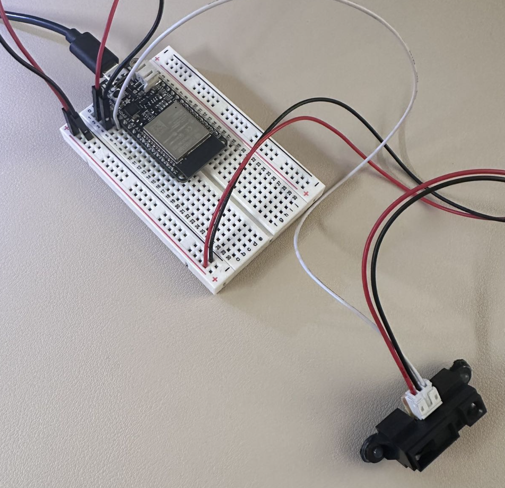

In this assignment I tried to use IR distance sensor as my sensor. the effect I wanted to achieve was to change the size of a red ball by detecting the distance through infrared.
Plan1
First I started by connecting the sensor to the breadboard with a black wire to the GROUND, a red one to the +, and a white wire to designate a connector.
Then I first started to write the Arduino because I first needed to know that the sensor was able to receive in sending information.
Then I started writing the Processing to put the data into the processing to reflect on a red ball.

But! Nothing happened!!!
So I began the long search for my problem.
First of all, I had the wrong interface, I tried the serial.list code to find my correct interface which is [4].
Then secondly I was importing the wrong data, I tested again with the Arduino's serial monitor my data range was 1200-3000.
Solve the final problem!
The last problem I found was with the print and println on top of the Arduino, as I had just written it wrong causing it to not really know how to log transferring my data. In my attempts to make changes to this section, I managed to get the ball to start changing size and also blink once per change!